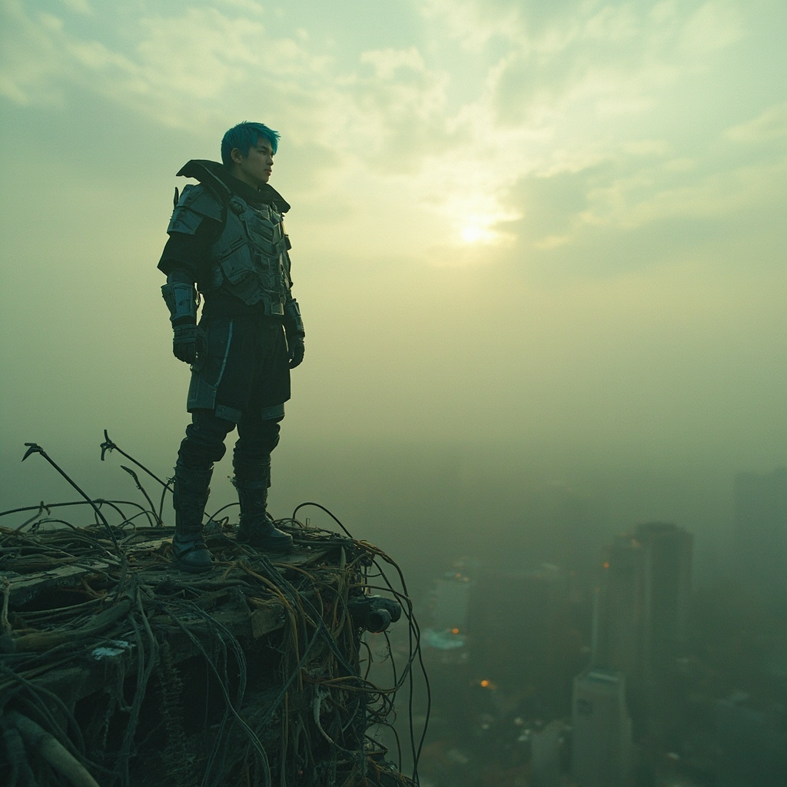
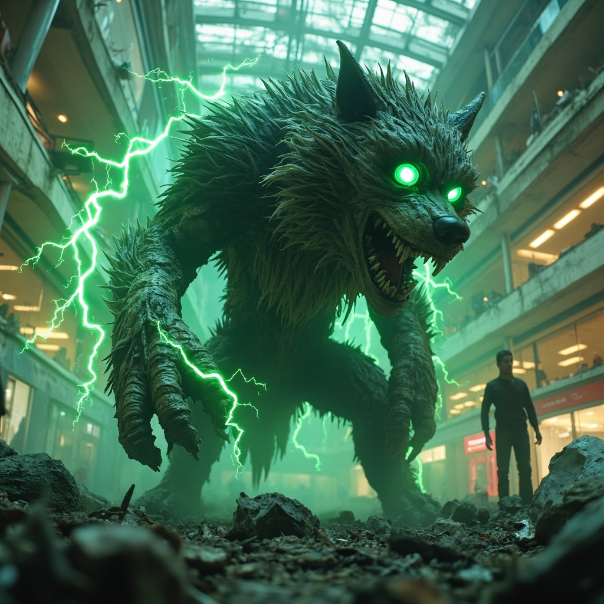

🎧 點擊播放有聲朗讀
寒風從破舊的光纖塔骨架縫隙中穿過。林塵站在塔頂，低頭看向腳下密密麻麻的廢舊機箱與裂縫中蠕動的雜草。
末法時代已持續超過一百五十年。曾經繁華的都市如今只剩下鋼筋水泥的骨架。
靈芯系統在他視野中投射出一幅環境掃描圖。
「地形分析：廢棄城市核心區，建築損毀率87%」
「生物跡象：檢測到多個移動目標，威脅等級待評估」
「資源標記：可用水源（北方200米）」

「警告：偵測到異常生物接近」
「威脅等級：中等」
「生物類型：靈化獸——輻射灰狼（變異體）」
一頭體型碩大的灰狼正從廢墟中竄出，雙眼泛著詭異的綠光，身上的皮毛隱隱有電弧跳動。
林塵對抗變異野獸，納米法術與野獸的機械部件激烈碰撞。
林塵在廢墟中找到隱藏的物資庫，各種修真丹藥和科技裝備。